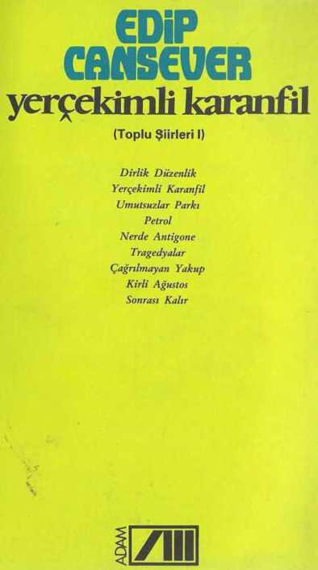

Edip Cansever'in yayımlanmasına izin verdiği bütün şiirlerini içeren iki ciltlik "Toplu Şiirleri" derlememizin
birincisi olan bu kitapta yayım sırasına göre şairin şu yapıtları yer almaktadır:
Dirlik Düzenlik (1954); Yerçekimli Karanfil (1957); Umutsuzlar Parkı (1958); Petrol (1959); Nerde Antigone (1961);Tragedyalar (1964); Çağrılmayan Yakup (1966); Kirli Ağustos (1970); Sonrası Kalır (1974).
"Şairin ele aldığı konular kendi durumunu değil, çevresini kaplayan yığınların iç dünyasını ışıtacak, onların
yaşayışlarını yenileştirecek, başka başka görüşler katabilecek özellikler taşımalıdır. Kuvvetin, dayanıklılığın, ha-
yata bağlılığın, günden güne uygarlığa gitmenin kökleri şiire de bağlıdır. Demek oluyor ki şiir yalnız lüks
olmaktan çıkmış, gerçeği gösteren, insanı inceleyen bir güzellik olmanın yolunu tutmuştur." (1954)
— Edip Cansever